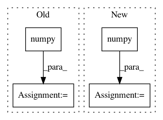

d9f1874e3489edc915228dcfdae64d5294034464,rllib/agents/pg/tests/test_pg.py,TestPG,test_pg_loss_functions,#TestPG#,34
Before Change
expected_logp = sess.run(expected_logp)
else:
expected_logp = expected_logp.numpy()
expected_loss = -np.mean(
expected_logp *
(train_batch[Postprocessing.ADVANTAGES] if fw != "torch" else
train_batch[Postprocessing.ADVANTAGES].numpy()))
check(results, expected_loss, decimals=4)
if __name__ == "__main__":
After Change
expected_logp = sess.run(expected_logp)
elif fw == "torch":
expected_logp = expected_logp.detach().cpu().numpy()
adv = adv.detach().cpu().numpy()
else:
expected_logp = expected_logp.numpy()
expected_loss = -np.mean(expected_logp * adv)
check(results, expected_loss, decimals=4)
In pattern: SUPERPATTERN
Frequency: 3
Non-data size: 4
Instances
Project Name: ray-project/ray
Commit Name: d9f1874e3489edc915228dcfdae64d5294034464
Time: 2020-10-27
Author: sven@anyscale.io
File Name: rllib/agents/pg/tests/test_pg.py
Class Name: TestPG
Method Name: test_pg_loss_functions
Project Name: GPflow/GPflow
Commit Name: 22edd92d06c201b1f40a656e5bbca84a5f483f2d
Time: 2020-02-14
Author: st--@users.noreply.github.com
File Name: doc/source/notebooks/advanced/coregionalisation.pct.py
Class Name:
Method Name:
Project Name: ray-project/ray
Commit Name: 22ccc43670dac93eb7fe81520a84cf3979d05693
Time: 2020-04-06
Author: sven@anyscale.io
File Name: rllib/utils/test_utils.py
Class Name:
Method Name: check